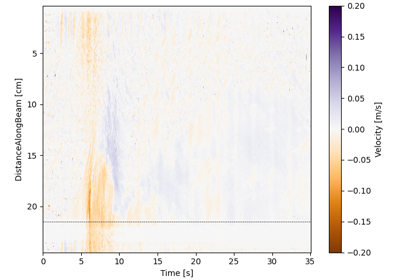

pyudv.read_mfprof.velocity_from_mfprof_reading#
- velocity_from_mfprof_reading(Data, Parameters, Nbytes=8)[source]#
Calculate velocity from Data and Parameters dictionnaries as output of
read_mfprof, using the functionvelocity_from_UVPdata.- Parameters:
Data (dict) – Data dictionnary coming from
read_mfprof.Parameters (dict) – Parameters dictionnary coming from
read_mfprof.Nbytes (int) – Number of bytes over which the raw data are coded (the default is 8).
- Returns:
Velocity field
- Return type:
float, numpy array
Examples using pyudv.read_mfprof.velocity_from_mfprof_reading#

Read and plot .mfprof data